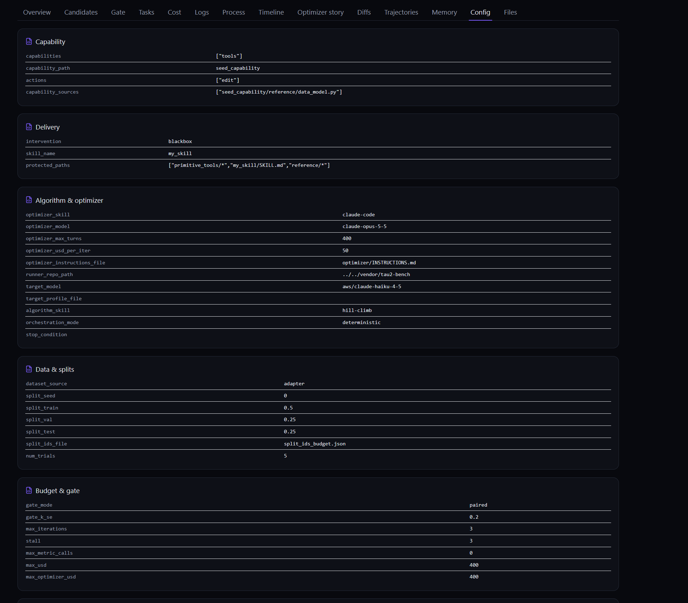

Optimizing using the blackbox approach
In the blackbox approach the optimizer process never touches the benchmark. This approach introduces two additional services:
- Skillberry Store: a smart repository of tools and skills for agentic workflows.
- Skillberry Proxy-Agent: the central coordinator for LLM communication, skill resolution and response optimization.
cap-evolve deploys the capabilities to optimize (system prompts, tools, skills) into the Skillberry Store, and the Skillberry Proxy-Agent reads them and injects them into the agent's LLM calls. The benchmark agent is left unchanged: it receives the optimized response from Skillberry.
How it works
The diagram above shows the flow between the benchmark agent and the real model it reaches. The agent receives an optimized response without being modified.
What the blackbox arm is
A capability is what gets edited (capabilities:). An
intervention is how the edited candidate reaches the model under test
(intervention:). The two are independent. In the worked example both arms
optimize the airline agent's tools (capabilities: [tools]); only the
delivery differs.
| Direct | Blackbox | |
|---|---|---|
| Delivery | the runner loads the candidate's tool code in its own process | the candidate becomes a store skill; the Proxy-Agent injects it |
| What the agent calls | the gateway model | the sentinel ibm/skillberry-local; the Proxy-Agent calls the real model (SPA_MODEL_NAME) |
| Extra services | none | Store :8000, Proxy-Agent :7000, tau2's environment service :8004 |
The user simulator, judges and verifiers call the gateway directly, so only the agent under test sees the candidate.
Before you start
gitandmake.setup.shcreates a Python 3.12 venv.-
A repo-root
.envwithOPENAI_BASE_URLandOPENAI_API_KEY(your gateway),SPA_MODEL_NAME(the model the Proxy-Agent calls, asopenai/<model>) andTAU2_USER_MODEL.TAU2_AGENT_MODELis optional. - An optimizer: a logged-in Claude Code session, or
ANTHROPIC_API_KEY.
The run, step by step
Setup: install, provision, pass the hard gate
bash examples/tau2_sierra_airline/blackbox/setup.shSix numbered steps, ending with READY.:
- tools + venv;
- clone tau2 into
vendor/tau2-benchatTAU2_REFERENCE_SHA; - install cap-evolve and tau2 (50 airline tasks load);
- install the snapshot as the project in
.capevolve-blackbox/project; - provision the Skillberry store and proxy under
vendor/(nothing is started); cap-evolve check, the hard gate.
Look for READY. and no SETUP FAILED:. Add --no-dashboard to skip the dashboard.
Smoke: task 9, one trial, no optimizer spend
bash examples/tau2_sierra_airline/blackbox/run.sh --smoke
run.sh starts tau2's environment service on :8004 (log:
/tmp/env_manager.log), starts the store, imports the 14 frozen primitive
tools and deploys the seed skill (primitives in store: 14). Then it runs
cap-evolve run, whose preflight starts the proxy.
A good smoke has task-9 rollouts with error null and a real reward. The
mock optimizer makes no edits, so this checks the pipeline, not the score.
The full run
bash examples/tau2_sierra_airline/blackbox/run.sh
capevolve.yaml: the 7 budget tasks × 5 trials, agent
aws/claude-haiku-4-5, optimizer Claude Code
claude-opus-5-5, hill-climb, 3 iterations. The run lands in
.capevolve-blackbox/run_<ts>/, and the banner prints the dashboard
URL.
Stop the stack
The services keep running after the run. Stop them with
blackbox_env.stop_all() and
pkill -f tau2.orchestrator.environment_manager. Always stop them before running another benchmark.
What the optimizer edits
The seed is one skill, my_skill. It is imported into the
Skillberry Store, and it is the only skill the Proxy-Agent serves
(skill_name: my_skill). Its tools live in
my_skill/scripts/, one file per tool, and each file is one of
tau2's 14 airline tools (book_reservation,
cancel_reservation, get_user_details, …). A seed tool is just
tau2's signature and docstring, calling its primitive:
def get_user_details(user_id: str):
"""Get the details of a user, including their reservations. ..."""
return env_get_user_details(user_id=user_id)
The optimizer rewrites these tools and adds new ones. my_skill/SKILL.md
(empty), primitive_tools/ (the 14 env_<tool> functions) and
reference/ are sealed by protected_paths. Editing one voids the
candidate.
Every tool must follow the delivery rules below. They are given to the
optimizer in
optimizer/INSTRUCTIONS.md.
- One public top-level
defper file, named exactly like the file. Every top-leveldefbecomes its own tool, so helpers are nested and_-prefixed. - The signature and docstring are the schema the model reads. The seed's 14 signatures are frozen, because the scorer matches actions by name and arguments. The
defline stays on one line. - A structured parameter's Pydantic class goes in the tool's own file, with only
typing/pydanticimports and no self-referencing model, so the store publishes a rich schema. - The environment is reached only through the
env_<tool>primitives, called by bare name. Never call_make_api_call. - A new or composite tool is a new file under
my_skill/scripts/; removing a tool means deleting its file.
The worked run's best candidate added, among others,
find_same_day_reservations (groups a user's flights by day, so the agent
cancels exactly the right duplicates), book_reservations_in_order (books
several reservations in a fixed order), and a check that routes an insurance-only
cancellation through cancel_reservation_with_insurance(reservation_id,
reason).
Reading the results
Open the dashboard with cap-evolve dashboard --base .capevolve-blackbox.
Each run's Config tab shows how the candidate was delivered, under
"Delivery":

intervention: blackbox, skill_name: my_skill).
On a correctly wired run:
- one environment session per trial attempt
- no session left open: every logged
env_idanswersGET :8004/{env_id}/infowith a non-200; - the writes reach the scorer: some trials have
db_matchtrue; - cost reads 0 for the agent: the proxy-agent reports no token usage, so that 0 means not measured.
The worked run (run_20261013_121303) uses the same 7 tasks for train, val
and test (split_ids_budget.json). For a held-out number, pin disjoint
splits.
Troubleshooting
Check rollout.error in rollouts/val/*__seed__t0.json first.
| Symptom | Fix |
|---|---|
intervention preflight failed: … is not provisioned | run setup.sh; a run never provisions |
… needs skill_name | set skill_name: my_skill in the spec |
every rollout errors with deploy failed: … | read the message: the adapter could not deploy the candidate |
SeamError: tau2 is at … | run setup.sh, which checks out TAU2_REFERENCE_SHA |
db_match false on every trial | the environment's trajectory is not merged before evaluation |
no env_id in the execution context | the agent's calls are missing the context headers |
| the agent behaves like a different model | set SPA_MODEL_NAME in .env before the store starts |
Going further Work in progress
To put your own benchmark on the blackbox arm, its runner must route only the agent to
the sentinel, send the context headers, expose its environment over HTTP, merge both
trajectories in the right windows, open and close a session per trial, and deploy the
candidate in apply(). The example was produced by an agent following an
onboarding prompt.